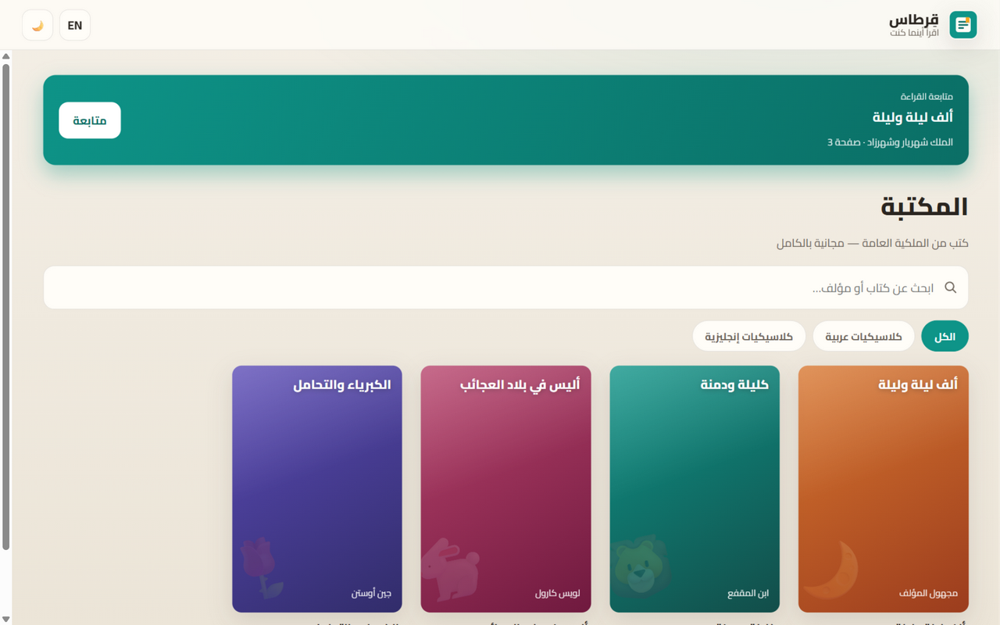
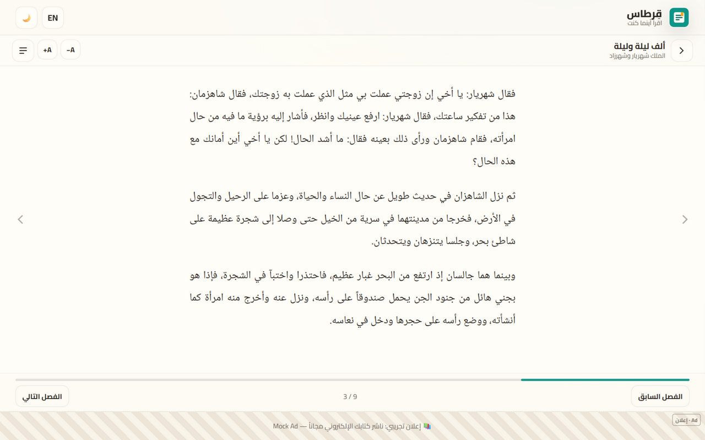
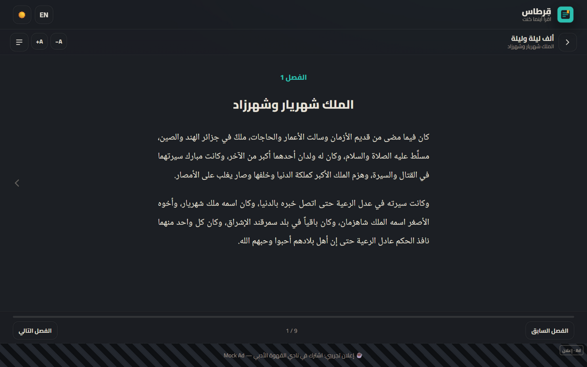
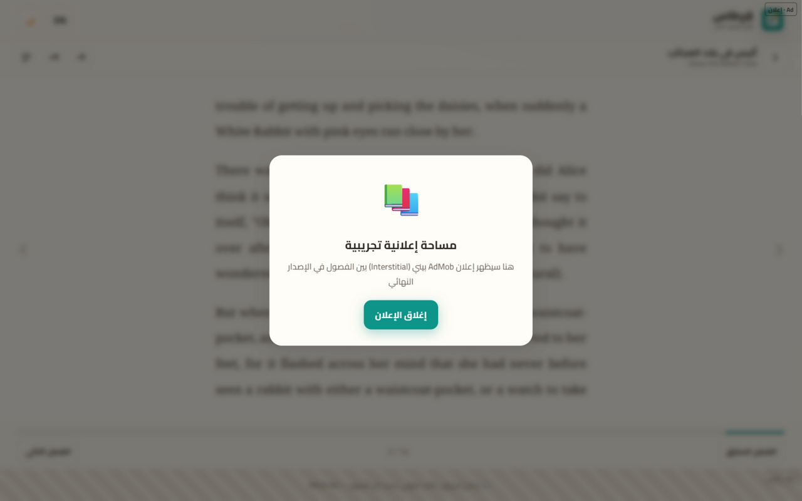

تغطي هذه الدراسة: تحليل السوق والمنافسين، البنية التقنية متعددة المنصات، خطة تشغيل بصفر تكلفة، حدود الخدمات المجانية، استراتيجية الربح من الإعلانات بتوقعات إيرادات محسوبة، وخارطة طريق تنفيذية مدتها 12 أسبوعاً — مرفقة بنموذج أولي عملي جاهز.
عشرة أقسام تأخذك من الفكرة إلى خطة تنفيذ كاملة — مع أرقام موثقة من مصادر حقيقية ونموذج أولي عامل.
ما الذي يميز هذه الدراسة؟ كل رقم فيها إما موثق من مصدر منشور أو محسوب بمعادلة معلنة. والنموذج الأولي المرفق حقيقي ويعمل الآن على المتصفح — ليس مجرد تصاميم.
«قِرطاس» تطبيق قراءة مجاني يقدم كتب الملكية العامة بالعربية والإنجليزية عبر كود واحد يعمل على جميع المنصات، مع نموذج ربح من الإعلانات لا يعطّل تجربة القراءة.
سوق الكتب الرقمية ينمو بثبات، بينما يفتقر القارئ العربي إلى منصة مجانية بالكامل تجمع الكلاسيكيات العربية بصورة منسقة وقابلة للقراءة على أي جهاز. في المقابل، أدوات التطوير الحديثة (Flutter وPWA وFirebase المجاني) خفضت كلفة بناء تطبيق متعدد المنصات إلى ما يقارب الصفر — لم يعد الدخول يحتاج رأس مال، بل تنفيذاً ذكياً.
الإعلانات هي مصدر الربح الوحيد في المرحلة الأولى: بانر غير مزعج أسفل القارئ، وإعلان بيني واحد بين الفصول، وإعلانات مكافآت اختيارية مقابل مزايا تجميلية. وبحسب معايير 2025، يدر المستخدم العربي النشط ما بين 0.5 و1.5 دولار سنوياً من الإعلانات، بينما يقارب المستخدم الأمريكي 10 أضعاف ذلك — ولذلك يستهدف المشروع الجمهورين معاً منذ اليوم الأول.
الخلاصة: مشروع قابل للتنفيذ بلا رأس مال، بمنتج يمكن إطلاقه خلال 12 أسبوعاً، وسوق حقيقي له فجوة واضحة في المحتوى العربي المجاني. المخاطرة المالية شبه معدومة، والقيمة التعلمية عالية حتى لو لم تحقق الأرقام الطموحة.
أن يجد القارئ العربي كلاسيكيات تراثه — ونوافذ على الأدب العالمي — في تطبيق واحد أنيق، مجاني بالكامل، يعمل على أي جهاز يملكه.
نصوص التراث متوفرة مبعثرة بجودة قراءة سيئة على مواقع متفاوتة، والتطبيقات العالمية مدفوعة أو لا تدعم العربية جيداً، والمنصات العربية إما اشتراكات أو كتالوج محدود.
تطبيق واحد بواجهة عربية أولاً وإنجليزية، يجمع كتباً من مصادر الملكية العامة الموثوقة، ويقدمها بقارئ احترافي — ويموّل نفسه من الإعلانات.
| الهدف | المقياس | المستهدف بعد 6 أشهر من الإطلاق |
|---|---|---|
| الوصول | تحميلات وتثبيتات تراكمية | 50,000+ مستخدم |
| التفاعل | متوسط مدة الجلسة | 10 دقائق أو أكثر |
| الاحتفاظ | العودة بعد 7 أيام (D7) | 20% أو أكثر |
| التشغيل | تكلفة البنية التحتية الشهرية | 0 دولار حتى 10 آلاف مستخدم نشط |
| الإيراد | صافي إيراد الإعلانات الشهري | 500 دولار أو أكثر |
تُراجع هذه المستهدفات شهرياً عبر Google Analytics (مجاني) ولا تُعتبر عقوداً بل مؤشرات تعلّم.
لأنها تحل أصعب مشكلتين في تطبيقات القراءة دفعة واحدة: حقوق المحتوى (صفر مخاطر قانونية، وتراخيص واضحة مثل Project Gutenberg وبرنامج هنداوي) وتكلفة المحتوى (لا عروض نشر ولا إتاوات مؤلفين). آلاف الكلاسيكيات العربية والعالمية متاحة مجاناً وقانونياً — والحصانة التنافسية تأتي من تجربة القراءة والتنظيم، لا من امتلاك النصوص.
غالبية قراءة الكتب الإلكترونية انتقلت إلى الهواتف، خصوصاً في الأسواق الناشئة حيث الهاتف هو الحاسوب الوحيد — وهذا جوهر تصميم قِرطاس.
الاشتراكات الشهرية عقبة كبيرة أمام القارئ العربي؛ نموذج «مجاني مدعوم بالإعلانات» هو الأنسب ثقافياً واقتصادياً للمنطقة.
موجة متجددة من المحتوى العربي حول التراث والكلاسيكيات على منصات مثل تيك توك ويوتيوب — قناة انتشار مجانية جاهزة للاستغلال.
أكثر من 400 مليون ناطق بالعربية، ومعدلات استخدام هواتف ذكية مرتفعة في الخليج ومصر والمغرب. لا توجد منصة عربية مهيمنة للكتب المجانية ذات الملكية العامة؛ أقرب المنافسين إما مؤسسات غير ربحية بتجربة تقنية بسيطة (هنداوي) أو اشتراكات صوتية (كتایب وستوري تل). الفجوة: تجربة قراءة عربية ممتازة + مجانية بالكامل + على كل المنصات.
ملاحظة منهجية: تقديرات حجم السوق تتباين بين شركات الأبحاث (من 15.4 إلى 26.8 مليار دولار لعام 2025) بسبب اختلاف تعريف «الكتاب الإلكتروني» — وقد أثقنا بالفجوة الأسفل والأعلى بدلاً من رقم واحد، والمصادر كاملة في صفحة الخلاصة.
| المنافس | نقاط القوة | نقاط الضعف | درسنا منه |
|---|---|---|---|
| Kindle (أمازون) | تجربة قراءة ممتازة، متجر ضخم | مدفوع، دعم عربي هامشي، مقفل على منظومة أمازون | جودة القارئ هي المنتج |
| Google Play Books | انتشار عالمي، مزامنة سلسة | كatalog عربي ضعيف، لا يركز على الملكية العامة | قوة المزامنة عبر الأجهزة |
| واتباد | مجتمع ضخم ومحتوى مستخدمين | جودة النصوص متفاوتة، تجربة قراءة أدنى من الكتب | قوة المجتمع في الانتشار |
| هنداوي | مكتبة عربية مجانية موثوقة، مرجعية حقوق | تجربة تقنية بسيطة، لا تطبيق قارئ حديث متعدد المنصات | شراكة محتوى محتملة |
| كتایب / ستوري تل | تجربة صوتية غنية، محتوى حصري | اشتراك شهري، التركيز على الصوت لا النص | الصوت مرحلة مستقبلية |
الجملة التموضعية: «الطريقة الأجمل لقراءة الكلاسيكيات العربية والعالمية — مجاناً، على أي جهاز». نتنافس على التجربة والتنظيم لا على محتوى حصري، ونستهدف شريحة يتركها الآخرون: القارئ العربي الذي لا يملك بطاقة دفع أو لا يقبل بالاشتراكات.
كل النصوص منشورة برخص تسمح بالتوزيع المجاني (ملكية عامة أو رخص حرة) — صفر مخاطر قانونية مع توثيق مصدر كل كتاب داخل التطبيق.
صممنا كل ميزة لتخدم واحدة من ثلاث شخصيات حقيقية — إن لم تخدم أياً منها، فهي ليست في المنتج.
تقرأ في المترو 25 دقيقة يومياً على هاتف متوسط، وتحتاج مراجع التراث لدراستها دون إنفاق.
ما يهمها: تحكم بالخط، وضع نهاري/ليلي، حفظ الموضع تلقائياً، تحميل للقراءة بلا إنترنت.
وصولها للتطبيق: تيك توك وريلز «اقتباسات الكلاسيكيات».
يقرأ 20 دقيقة قبل النوم، يملك هاتفاً وحاسوباً، ويكره الاشتراكات والدفع بأبطال أجنبية.
ما يهمه: مزامنة الموضع بين الجهازين، واجهة عربية أصيلة، خلو التطبيق من الإزعاج.
وصوله للتطبيق: بحث جوجل عن اسم الكتاب + متجر التطبيقات.
تقرأ الكلاسيكيات الإنجليزية وتكتب عنها؛ تفضّل تطبيقات خفيفة تعمل في المتصفح وعلى الحاسوب.
ما يهمها: واجهة إنجليزية مصقولة، مكتبة كلاسيكيات منسقة، PWA يعمل بلا تثبيت.
وصولها للتطبيق: جوجل ومجتمعات القراءة (Reddit وGoodreads).
الشخصيات الثلاث تحدد لغة المنتج: العربية أولاً (RTL أصيل بخط نسخ مريح) مع إنجليزية كاملة لرفع قيمة الإعلان في الأسواق عالية العائد. والقراءة بلا إنترنت شرط أساسي (سارة في المترو)، والمزامنة عبر الحساب المجاني مرحلة ثانية (أحمد)، والتثبيت من المتصفح بلا متاجر يكسر حاجز التجربة (Emma).
الانضباط في نطاق النسخة الأولى هو أهم قرار في المشروع — كل ما لا يخدم أحد الشخصيات الثلاث يؤجل لمرحلة لاحقة.
قاعدة الإعلانات الذهبية: لا إعلان داخل نص الصفحة أبداً، ولا أكثر من إعلان بيني واحد لكل 10 دقائق قراءة، والإعلانات المكافأة اختيارية دائماً. تجربة القراءة أقدس من الإيراد قصير المدى — فقدان قارئ واحد يكلف أكثر مما يدره إعلان.
| الخيار | المنصات المدعومة | نقاط القوة | القيود |
|---|---|---|---|
| Flutter (الموصى به للإنتاج) | Android وiOS وويب وويندوز وماك ولينكس من كود واحد | أداء أصلي، قارئ صفحات مخصص، مجتمع ضخم، مجاني مفتوح المصدر | حجم تطبيق أكبر قليلاً |
| PWA (النموذج الحالي) | كل المنصات عبر المتصفح + تثبيت | صفر تثبيت، تحديث فوري، يعمل على iOS بلا متجر | قدرات نظام أقل، iOS مقيد بعض الميزات |
| React Native | الجوال + ويب (بمكتبات إضافية) | نظام React، مشاركة مهارات الويب | دعم سطح المكتب أضعف، تكامل ويب أقل نضجاً |
| تطبيقات أصلية منفصلة | كل منصة بكودها | أقصى أداء | 3–4 أكواد متوازية — يكسر قيد التكلفة الصفرية |
القرار: يبدأ المشروع بـ PWA (صفر نشر وصفر رسوم) ويُبنى الإنتاج الكامل بـ Flutter لتوزيع أقوى على المتاجر — كلاهما مجاني والانتقال بينهما يحمي الاستثمار.
ملاحظة هندسية: الكتب ملفات ثابتة على الاستضافة — قراءتها لا تستهلك حصة Firestore المجانية إطلاقاً.
المرفق مع هذه الدراسة نموذج أولي حقيقي (PWA) جرى بناؤه واختباره أثناء إعداد الدراسة. هذه لقطات شاشة حقيقية منه.


ترقيم الصفحات بالأعمدة الأفقية يعمل بشكل سليم مع النص العربي المضبوط، مع قلب سليم للاتجاه بين العربية والإنجليزية داخل نفس التطبيق.
البانر أسفل الشاشة لا يلمس نص القراءة، والفاصل بيني ظهر مرة واحدة بين الفصول مع عدّاد تخطٍ — مقبول للاختبار مع مستخدمين حقيقيين.


أثناء بناء النموذج ظهرت تحديات حقيقية وثّقناها لأنها ستتكرر في الإنتاج: تمرير الأعمدة الأفقية في الاتجاه العربي يتطلب معالجة خاصة لاتجاه RTL في كل المتصفحات، وتغيّر الخطوط عند التحميل يغيّر عدد الصفحات فيتطلب إعادة قياس بعد اكتمال الخطوط، وتجمد مؤقتات الخلفية في بعض المتصفحات فرض ضماناً زمنياً لإنهاء حركة قلب الصفحات. هذه الحلول منفذة ومختبرة في الكود المرفق.
النموذج PWA كامل: يثبت على شاشة هاتف أندرويد وآيفون وعلى حاسوب ويندوز وماك من المتصفح مباشرة، ويعمل بلا إنترنت بعد أول زيارة — بلا متاجر ولا رسوم.
القارئ الإنجليزي يعمل بنفس الجودة في الاتجاه المعاكس (LTR) مع خط Serif كلاسيكي — دليل عملي على أن «كود واحد لكل المنصات واللغات» ليس شعاراً تسويقياً.
كل بند تشغيلي في السنة الأولى له بديل مجاني حقيقي — ليس تجريبياً بل مستخدم فعلياً من قبل مشاريع مماثلة.
| البند | الحل المجاني | الحدود التي نعيش معها |
|---|---|---|
| تطوير التطبيق | Flutter / PWA — مفتوح المصدر | وقت الفريق فقط |
| بيئة التطوير | VS Code + Git + GitHub | مستودعات عامة مجانية |
| استضافة الموقع والتطبيق | Firebase Hosting أو Cloudflare Pages | نطاق فرعي (app.web.app) |
| قاعدة البيانات والدخول | Firebase Spark (Auth + Firestore) | حدود يومية — صفحة 14 |
| التحليلات والأخطاء | Google Analytics + Crashlytics | بلا حدود جوهرية |
| أيقونات وهوية بصرية | توليد برمجي + خطوط OFL مجانية | — |
| المحتوى | الملكية العامة (هنداوي، Gutenberg) | كلاسيكيات فقط في البداية |
| الإعلانات (الجهة الربح) | AdMob وAdSense — بلا رسوم انضمام | العائد يبدأ صغيراً وينمو بالمستخدمين |
الانطلاقة على qirtas.web.app (مجاني من Firebase) — وعند أول إيراد ثابت يُشترى دومين خاص بمبلغ ~$10 في السنة من أول عائدات. الشراء مؤجل لأنه تحسين جمالي لا شرط عمل.
مبدأ حاكم: لا نفترض «مجاني للأبد»، بل «صفر تكلفة حتى يتدفق الإيراد». البنود الوحيدة التي قد تُدفع لاحقاً كلها اختيارية ومؤجلة: دومين (10$)، Google Play (25$ مرة واحدة)، وترقية Firebase عند تجاوز الحدود المجانية.
أكبر مفاجأة للتكلفة الصفرية هي رسوم متاجر التطبيقات — وهنا خريطة كاملة للرسوم وبدائلها المجانية.
| قناة التوزيع | الرسوم | ملاحظات |
|---|---|---|
| PWA — التثبيت من المتصفح | 0$ — القناة الأساسية | يعمل على Android وiOS وويندوز وماك؛ تجاوز كامل لمتاجر أبل وجوجل |
| توزيع APK مباشر | 0$ | ملف تثبيت أندرويد من الموقع (مع تمكين التثبيت من مصادر غير معروفة) |
| Amazon Appstore | 0$ | بلا رسوم تسجيل سنوية — عمولة على المبيعات فقط (ونحن مجاني) |
| Samsung Galaxy Store | 0$ | بلا رسوم تسجيل؛ حصة قوية من أجهزة سامسونج في المنطقة العربية |
| Huawei AppGallery | 0$ | سوق مهم لأجهزة هواوي المنتشرة في الشرق الأوسط |
| Google Play | 25$ مرة واحدة | يُدفع من أول أرباح الإعلانات — منصة الأندرويد الأهم إحصائياً |
| Microsoft Store (نسخة ويندوز) | ~19$ مرة واحدة | أولوية منخفضة؛ PWA على ويندوز يغطي الحاجة في البداية |
| Apple App Store | 99$/سنة | أغلى بند — يُؤجل لأقصى حد؛ مستخدمو آيفون يخدمهم PWA المثبت من سفاري |
PWA + APK مباشر + متاجر مجانية. كل الأدوات والاستضافة والحسابات بلا تكلفة.
عند وصول رصيد AdMob لأول عتبة دفع، يُخصص 25$ لحساب Google Play.
حساب آبل فقط إذا أظهرت البيانات أن مستخدمي iOS كثر ويتجاوزون حدود PWA.
خلاصة التوزيع: يمكن الوصول إلى 100% من مستخدمي الإنترنت بلا رسوم عبر PWA، و90%+ من مستخدمي الأندرويد عبر المتاجر المجانية وAPK — والتكاليف الثلاثة الصغيرة (25$ / ~19$ / 99$) كلها «ترقيات إيراد ممول ذاتياً» لا شروط انطلاق.
الصدق الهندسي جزء من الدراسة: لهذه الخدمات المجانية حدود معلنة — وهذا كيف نظبط استخدامنا داخلها.
| المورد | الحد المجاني | ماذا يعني لقِرطاس |
|---|---|---|
| قراءات Firestore | 50,000 / يوم | تكفي ~5 آلاف مستخدم نشط يومياً باستخدام ذكي (أدناه) |
| كتابات Firestore | 20,000 / يوم | حفظ المواضع مجمّع (debounced) — كتابة واحدة كل دقائق قراءة |
| التخزين | 1 GiB | بيانات المستخدم النصية فقط — الكتب ليست هنا |
| النقل الصادر | 10 GiB / شهر | مزامنة خفيفة؛ الكتب تُنقل من استضافة الملفات الثابتة |
| Hosting | 10 GiB تخزين + نقل يومي | واجهة التطبيق + نصوص الكتب ثابتة ومضغوطة — وفيرة للانطلاق |
قراءة كتاب لا تلمس Firestore أبداً: النص يُحمَّل كملف JSON/EPUB من Hosting مع تخزين محلي كامل بعد أول قراءة. حصة القراءات تبقى للمزامنة فقط.
المستخدم يقرأ ويتقدم دون تسجيل؛ الحساب اختياري في المرحلة الثانية للمزامنة — فانخفض استهلاك الخدمات بنحو 80% عن التصميم الساذج.
موضع القراءة يُحفظ محلياً فوراً وسحابياً كل 3 دقائق أو عند الخروج — من مئات الكتابات المحتملة إلى أقل من 20 لكل جلسة.
خطة التجاوز: عند اقتراب الحدود (ننبه على 70%)، الخيار الأول ترقية Blaze «الدفع حسب الاستهلاك» — وتكلفتها عند 10 آلاف مستخدم نشط تقديرياً بين 5$ و25$ شهرياً، تدفع من إيراد الإعلانات نفسه بلا ضغط. أي أن النمو نفسه هو الذي يموّل ترقيته.
AdMob للتطبيق وAdSense للموقع — الصيغ الثلاث المعروفة، بمواضع مدروسة وقاعدة حماية صارمة لتجربة القراءة.
شريط 320×50 لا يلامس نص القراءة أبداً، بتحديث كل 60 ثانية. عائد منخفض لكل ظهور لكنه مستمر ويشكّل القاعدة الثابتة للإيراد.
مرة واحدة عند الانتقال لفصل جديد، بعد عدّاد 5 ثوانٍ، وبحد أقصى إعلان كل 10 دقائق. أعلى صيغة عائداً — نستخدمها باعتدال شديد.
المستخدم يختار مشاهدة إعلان مقابل مزايا تجميلية: 24 ساعة بلا بانر، أو سمة خط مميزة. تحويل الإزعاج المحتمل إلى معادلة ربح مشتركة.
| الصيغة | الولايات المتحدة | الشرق الأوسط (مصر/الشام/المغرب) | الخليج (UAE/KSA) |
|---|---|---|---|
| بانر | 0.7 – 2.8 $ | 0.3 – 0.65 $ | قريب من المستوى الأمريكي |
| بيني | 8 – 15 $ | 1 – 3 $ | حتى ~10 $ |
| مكافآت (فيديو) | 15 – 40 $ | ~2.3 $ (أندرويد) | أعلى من المتوسط الإقليمي بوضوح |
المصدر: معايير ناشرين 2025 (Mistplay وPlaywire وSR Zone) — الفجوة بين الأسواق 3–10 أضعاف، ولهذا نستهدف الجمهورين: العربي للحجم والأمريكي/الخليجي للعائد.
قواعدنا الصارمة: لا إعلان داخل صفحة النص، لا بيني في أول جلسة، لا أكثر من بيني واحد لكل 10 دقائق، وتخطي دائم بعد ثوانٍ. متوسط «كثافة الإعلان» المستهدف أقل من 8 ظهورات لكل مستخدم يومياً — أقل بكثير من تطبيقات الألعاب.
الإيراد الشهري = المستخدم النشط يومياً × متوسط ظهورات الإعلان لكل مستخدم × eCPM ÷ 1000 × 30 يوماً. لا سحر — أرقام قابلة للتدقيق والتعديل.
| السيناريو | مستخدم نشط يومياً | ظهور/مستخدم/يوم | eCPM مختلط | إيراد شهري | متى نتوقعه؟ |
|---|---|---|---|---|---|
| الانطلاقة | 1,000 | 6 ظهورات | 0.50$ | ~90$ | الشهر 2–3 |
| النمو | 10,000 | 8 ظهورات | 0.60$ | ~1,440$ | الشهر 6–9 |
| التوسع | 100,000 | 8 ظهورات | 1.20$ | ~28,800$ | السنة 2+ |
لماذا يرتفع eCPM مع النمو؟ لأن المحتوى الإنجليزي وقاعدة الخليج يرفعان النسبة المختلطة، ولأن المكافآت (الأعلى عائداً) تُفعَّل في المرحلة الثانية.
ألف مستخدم بست ظهورات يومياً = 6,000 ظهور، وبمعدل 0.50$ لكل ألف ظهور يكون العائد نحو 3$ يومياً — أي نحو 90$ شهرياً. يغطي أي ترقية بنية تحتية متوقعة مع فائض يدخل في تطوير المحتوى.
تطبيق قارئ عامل بلا رواتب يترك هامش الإعلان شبه كاملاً. حتى سيناريو الانطلاقة المتواضع «يشغّل» المشروع مجاناً، وسيناريو النمو يحوّله لمشروع جانبي مربح لفريق صغير.
RPM الإعلاني مقابل معدل الاحتفاظ: زيادة كثافة الإعلان ترفع RPM وتقتل الاحتفاظ — وهو رأس المال الحقيقي. قاعدة القرار: إذا هبط الاحتفاظ D7 تحت 20% بعد أي تغيير إعلاني، نتراجع فوراً مهما كان الربح الإضافي. الإعلان ضريبة على الانتباه، والقارئ العربي لا يرحم تجربة مبتذلة.
قنوات مجانية فقط، مرتبة حسب أثرها المتوقع — تبدأ كلها قبل الإطلاق بأسبوعين.
| المؤشر | المستهدف | الأداة المجانية |
|---|---|---|
| المستخدم النشط يومياً (DAU) | نمو 20% شهرياً في أول 6 أشهر | Google Analytics for Firebase |
| مدة الجلسة | 10 دقائق أو أكثر | Firebase Analytics |
| الاحتفاظ D7 | 20% أو أكثر | Firebase + لوحة أسبوعية |
| نسبة إنهاء الكتب | 30% أو أكثر من المبدئين | أحداث مخصصة (Custom Events) |
| إيراد الإعلانات لكل مستخدم | 0.05–0.15$ شهرياً (خلط عربي) | تقارير AdMob |
| الأعطال | أقل من 1% من الجلسات | Crashlytics |
إيقاع المراجعة: مراجعة أسبوعية 30 دقيقة (الأرقام + قرار واحد)، ومراجعة شهرية استراتيجية. أي ميزة لا تحرك أحد هذه المؤشرات خلال نسختين تُحذف — الانضباط أهم من الحماس.
دراسة صادقة تذكر ما قد يفشل — وكيف نقلل احتماله وأثره قبل حدوثه.
| الخطر | الاحتمال | الأثر | خطة التخفيف |
|---|---|---|---|
| نصوص منقولة بجودة رديئة (أخطاء تحويل رقمي) | مرتفع | مرتفع | فحص عينة من كل كتاب يدوياً، تصحيح تدريجي، وزر «أبلغ عن خطأ» داخل القارئ يحول القراء لفريق تدقيق مجاني |
| إرهاق إعلاني يقتل الاحتفاظ | متوسط | مرتفع | القواعد الصارمة (صفحة 15) + اختبار A/B لكثافة الإعلان + مراقبة RPM مقابل D7 أسبوعياً |
| منافس كبير يطلق منتجاً مشابهاً | متوسط | متوسط | سرعة الحركة، تخصص «عربي + كلاسيكيات + مجاني بالكامل»، وبناء مجتمع يصعب نقله |
| تغيّر سياسات المنصات المجانية (Firebase وغيرها) | منخفض | متوسط | معمارية «ملفات ثابتة أولاً» تقلل الاعتماد، وبديل جاهز (Cloudflare Pages/R2) قابل للنقل خلال أيام |
| رفض AdMob أو تعليق الحساب | منخفض | مرتفع | التزام صارم بسياسات المحتوى، ومحتوى نظيف 100%، ووسيط إعلانات بديل جاهز (AppLovin/Unity Ads) |
| نفاد حماس الفريق (مشروع جانبي) | متوسط | مرتفع | نطاق MVP صغير جداً، إيقاع إصدارات أسبوعي مرئي، والاحتفال بكل ألف مستخدم |
أسوأ سيناريو واقعي: يتوقف المشروع بعد 6 أشهر بعدة آلاف مستخدم. الخسارة المالية: أقرب للصفر (لا رأس مال). المكتسب: خبرة كاملة في تطوير متعدد المنصات، وكود قابل لإعادة الاستخدام، ومكتبة محتوى منسقة — أصل رقمي كامل يمكن بيعه أو إحياؤه لاحقاً. هذه خصائص نادرة في أي مشروع: المخاطرة لا تتجاوز الوقت المستثمر.
دراسة الحالة تثبت ثلاثة أمور: أولاً، تطبيق قراءة متعدد المنصات لم يعد مشروعاً يحتاج رأس مال — أدوات 2026 المجانية تغطي دورة الحياة كاملة. ثانياً، النموذج المرفق يعمل فعلاً: قارئ عربي/إنجليزي بترقيم صفحات سليم، بوضع ليلي، وحفظ موضع، وإعلانات تجريبية بمواضع مدروسة. ثالثاً، الربح من الإعلانات ممكن ومنضبط — بمعادلة شفافة وقواعد تحمي تجربة القراءة من جشع اللحظة.
تشغيل النموذج المرفق محلياً (تعليمة واحدة) ونشره فوراً على Firebase Hosting مجاناً لتجربة رابط حقيقي.
التجميع والتدقيق من هنداوي وGutenberg وفق قائمة النشر الأولى.
نقل التصميم المنفذ إلى Flutter وفق خارطة الطريق — نفس الواجهات والمنطق.
فتح AdMob (مجاناً) والربط بمعرّفات الاختبار ثم الحقيقية بعد النشر.
سطر أخير: أرخص مشروع هو الذي تتعلم منه حتى لو تعثر — وأفضل مشروع هو الذي يبدأ رغم ذلك. قِرطاس يحقق الشرطين معاً.